Estrellas, galaxias y la materia que no vemos
La clase que cierra el Módulo I amarra dos cabos: primero, cómo la vida y muerte de las estrellas explica los colores, los brazos espirales y la evolución de las galaxias; y después, el gran misterio que esa misma dinámica destapa — por cada kilo de materia conocida, el universo esconde unos cinco kilos de materia oscura cuya naturaleza aún no conocemos.
Esta clase tiene dos mitades. En la primera, la profesora reordena el material del módulo: para entender galaxias hay que entender estrellas, así que repasa el diagrama HR y de ahí deduce por qué una galaxia azul "acaba de" formar estrellas, por qué los brazos espirales son ondas y no objetos, y por qué las elípticas parecen ser el choque de dos espirales. En la segunda mitad ("El Universo Microscópico") baja al nivel de las partículas y las cuatro fuerzas para plantear la pregunta que cierra el módulo: cuando pesamos las galaxias usando su movimiento, la cuenta no cuadra. Para alguien de ingeniería, es un problema de identificación de sistemas: el modelo (masa visible + gravedad) no reproduce la señal medida (curvas de rotación), y la discrepancia es un factor 5.
El diagrama HR: dónde viven y mueren las estrellas
"Para entender galaxias, hay que entender a las estrellas."
El diagrama HR (Hertzsprung–Russell) grafica luminosidad versus temperatura de las estrellas. La clase lo usa como herramienta, no como fin (se ve en detalle en el curso de estrellas). Lo esencial:
- Las estrellas pasan ~95% de su vida en la secuencia principal: nacen en un punto de esa diagonal, se quedan ahí sin moverse, y solo la abandonan al morir.
- Al nacer un brote de formación estelar se puebla toda la secuencia: estrellas frías (~3.000 K), poco masivas y poco luminosas en un extremo; estrellas intermedias como el Sol; y estrellas muy masivas, muy calientes (~30.000 K) y muy luminosas en el otro.
- Ojo con las escalas: entre 3.000 y 30.000 K hay solo 1 orden de magnitud en temperatura, pero el rango de luminosidades cubre ~11 órdenes de magnitud. Ambos ejes son logarítmicos — "a los astrónomos les encantan los logaritmos".
Las estrellas mueren "desde arriba"
Cuánto vive una estrella también correlaciona con su lugar en la secuencia. Las más masivas —el chiste de la profesora: "son como estrellas de rock: se lo toman todo, se lo fuman todo y mueren jóvenes"— viven apenas unos pocos millones de años y explotan como supernovas. Las de tipo solar viven ~10 mil millones de años (el Sol va como en la mitad) y terminan como nebulosa planetaria + enana blanca — un "cadáver" sin generación interna de energía, que la profesora ni siquiera pondría en el diagrama. Y las más pequeñas viven más que la edad actual del universo: ninguna ha muerto todavía, jamás.
Ejemplos citados sobre la secuencia principal: masas de ~85, 40, 25 y 9 M☉ en el extremo alto. Una estrella de 25 M☉ ronda las 80.000 L☉; el Sol (tipo G, ~6.000 K) tiene 1 L☉; una estrella de 0,5 M☉ apenas ~3% de la luminosidad solar. El rango de masas es "angosto" (factor ~200), pero el de luminosidades es gigantesco.
Es el equilibrio hidrostático (en la transcripción aparece garblado como "equilibrio hidrogenión"): la presión interna debe sostener el peso de la estrella. Más masa ⇒ más peso ⇒ el núcleo necesita temperatura y tasa de fusión mucho mayores ⇒ quema su combustible a un ritmo desproporcionado. Aunque tiene más combustible, lo gasta muchísimo más rápido: la luminosidad crece más rápido que la masa, así que la vida cae con la masa. Salir de la secuencia principal ocurre justo cuando se agota el hidrógeno del núcleo.
Dos estrellas brillantes de nuestro cielo, una azul (Acrux) y una roja (Antares). El brillo aparente con que las vemos es una combinación de luminosidad intrínseca y distancia — no basta el color para saber cuál es "más potente". Las flechas y líneas sobre el diagrama HR muestran la evolución post-secuencia principal, que también es más rápida cuanto más masiva la estrella.
El diagrama HR es un scatter plot log-log donde la física se lee en las pendientes. Y la muerte escalonada de estrellas es un sistema con constantes de tiempo que abarcan ~5 órdenes de magnitud (10⁶ a >10¹⁰ años): como un banco de condensadores con RC muy distintos, las componentes "rápidas" (masivas, azules) se descargan primero y las "lentas" (enanas rojas) quedan casi como DC de fondo.
El color de una galaxia es un reloj
Pelar el plátano: qué nos dice el color sobre la historia de formación estelar.
Con el diagrama HR en mano, los colores de las galaxias (vistos en clases anteriores) por fin "hacen sentido":
- Una galaxia (o región) azulosa tiene estrellas de altísima masa, temperatura y luminosidad. Como esas estrellas viven pocos millones de años, su sola presencia grita formación estelar actual: hubo un brote hace muy poco.
- Esas mismas estrellas emiten sobre todo en el ultravioleta (propiedad del cuerpo negro caliente) y por eso ionizan su entorno, creando regiones HII: burbujas de hidrógeno ionizado en torno a los sitios de formación estelar.
- Una galaxia amarillenta/rojiza hace mucho que no forma estrellas: solo queda "el concho" — las estrellas de baja masa, frías y longevas.
La analogía del plátano y la razón masa/luminosidad
Tras un brote, las estrellas van muriendo desde arriba hacia abajo de la secuencia principal — al principio rapidísimo, después cada vez más lento. La profesora lo llama "pelar el plátano". La consecuencia cuantitativa: al morir las masivas (poca masa total, pero luminosidad desproporcionada), la población queda apenas menos masiva pero muchísimo menos luminosa. Es decir, la razón de la población estelar aumenta con la edad: por cada "kilo de estrella" hay cada vez menos luz. Esto explica lo dicho en clases anteriores: la razón masa–luminosidad cambia sistemáticamente a lo largo de la secuencia de Hubble, hacia galaxias con menos formación estelar.
Además, como el universo es demasiado joven para haber matado a las enanas más pequeñas, esas estrellas son un pozo que solo se llena: cada brote nuevo agrega estrellas pequeñas que se van acumulando, mientras las de arriba desaparecen. Las estrellas azules, en cambio, solo hablan del presente: duran tan poco que son un sensor de formación estelar reciente (últimos pocos millones de años).
El color integrado de una galaxia funciona como la respuesta al impulso de un sistema: un brote de formación estelar es un impulso, y la luz azul es un término transitorio de decaimiento rápido mientras la luz roja es el término de decaimiento lentísimo. Medir el color hoy equivale a estimar cuánto tiempo pasó desde el último impulso — una deconvolución de la historia de formación estelar.
Caballitos de feria y enjambres: la dinámica
Discos: rotación ordenada con oscilaciones. Esferoides: movimiento aleatorio.
En una galaxia con disco bien formado, el material (estrellas y medio interestelar) se mueve como caballito de carrusel: el movimiento es esencialmente circular, pero con oscilaciones en todas las coordenadas — sube y baja respecto del plano, entra y sale radialmente, y su velocidad angular también tiene periodicidad. En la realidad esas ondulaciones son de período mucho más largo que en el juego mecánico, pero la imagen es exacta.
Las componentes esferoidales — los bulbos de las espirales y las galaxias elípticas enteras — se mueven distinto: no es que no roten nada, pero domina la dispersión: órbitas mucho más aleatorias, como un enjambre. Y el punto clave que conecta con todo el módulo: no importa el tipo de movimiento, ambos cuentan como energía cinética del sistema, que es lo que evita el colapso gravitacional. Por eso "cantidad de movimiento circular" es un eje que ordena la secuencia de Hubble: mientras más desarrollado el disco, más rotación ordenada; casi sin disco, casi puro movimiento aleatorio.
Es la diferencia entre flujo laminar ordenado (disco: velocidad media alta, poca varianza) y agitación térmica (esferoide: velocidad media ~0, varianza alta). El "presupuesto" que sostiene al sistema contra la gravedad es el segundo momento del campo de velocidades, ya venga de la media (rotación) o de la varianza (dispersión). Adelanto útil: esa distinción es justo lo que permite pesar sistemas con el movimiento (sección 8).
Brazos espirales: ondas de densidad
El brazo no es un objeto: es un taco de tráfico por el que el material pasa.
Por qué los brazos no pueden ser "material enrollado"
La primera hipótesis histórica: si el disco rota, material inicialmente radial se iría enrollando como espiral. El problema es de escalas de tiempo: sabemos cuánto tarda el material en dar una vuelta y sabemos (por la edad de sus estrellas) que las galaxias son antiguas. El Sol, por ejemplo, ya dio ~30 vueltas a la galaxia según la clase. Con tantas vueltas, los brazos deberían estar enrolladísimos, casi borrados — y no lo están. La hipótesis muere.
La respuesta moderna: ondas de densidad
Hoy se sabe que los brazos son ondas de densidad: regiones de alta densidad del disco, perturbaciones que se propagan como las ondas al tirar una piedra a una laguna. Dos analogías de la clase:
- El taco en la carretera: los autos entran a la zona congestionada, pasan un rato apretados y salen. El taco existe y se mueve, pero ningún auto "pertenece" al taco.
- La ola del mar: la ola avanza, pero el agua (o el bañista) solo sube y baja al pasar la ola. Aquí, en vez de subir y bajar, el material se comprime al pasar el brazo.
El material del disco entra al brazo, se apila mientras está dentro y luego lo abandona. Y ojo con la sutileza: ambas cosas se mueven — el material orbita y el brazo también avanza azimutalmente (generalmente en el mismo sentido, con su propia velocidad). Por eso dónde y cómo se dan las resonancias es un problema complejo.
Por qué la formación estelar delinea los brazos
Al entrar al brazo, las nubes de gas se comprimen; las más frías colapsan gravitacionalmente y forman estrellas. Las estrellas masivas resultantes ionizan burbujas (regiones HII) y mueren antes de alcanzar a salir del brazo — por eso las regiones HII delinean los brazos con tanta precisión. Las regiones HII son transientes: viven lo que viven sus estrellas, unos pocos millones de años. Las estrellas longevas, en cambio, salen del brazo y siguen orbitando.
La evidencia multibanda (mostrada con una espiral vista por telescopio espacial): en ultravioleta se ven grumos que calzan con los brazos — formación estelar recién ocurrida; en el visible, estrellas tipo Sol; en infrarrojo, la población vieja, distribuida suavemente por todo el disco (los brazos se notan apenas, porque afectan a todo el material, pero sin grumos). Parte del material estelar además se devuelve: las estrellas masivas liberan material ahí mismo en el brazo; la mayoría lo devuelve mucho después, donde le toque morir.
El Sol está hoy en un espolón (un brazo "no logrado", también onda de densidad — hay galaxias de "gran diseño" con brazos perfectos y otras más desordenadas). No nacimos ahí: con ~30 vueltas dadas, hemos entrado y salido de brazos muchísimas veces. El Sol orbita a ~220 km/s y da una vuelta cada ~200 millones de años. Incluso hay galaxias con discos gruesos — herencias de vidas anteriores — que rotan en sentido contrario al disco delgado.
Lo que no cabe en la secuencia de Hubble
Enanas, gigantes cD, núcleos activos y choques de galaxias.
¿Qué galaxias faltan en la clasificación de Hubble? Hubble trabajaba con placas fotográficas (los inicios de la fotografía astronómica) y desde el hemisferio norte: no podía ver objetos débiles ni las Nubes de Magallanes. Su secuencia quedó hecha con las galaxias grandes y brillantes (tipo Andrómeda). Hubo que extenderla hacia los tipos Sd e irregulares, y con tecnología moderna aparecieron los extremos:
- Galaxias enanas: la clase muestra una enana del grupo de Leo — "un puñado de estrellas" de aspecto paupérrimo. ¿Qué más necesita para contar como galaxia? Materia oscura (¡el tema de la segunda mitad!). Se piensa que algunas son núcleos de ex-galaxias desmanteladas por una galaxia mayor; se estudia si Omega Centauri sería un ex-núcleo así. Es difícil separar los escenarios, porque una fusión también puede desarmar la materia oscura del satélite.
- Galaxias cD: las más grandes de todas. Rarezas que crecieron en el centro de cúmulos de galaxias tragándose a muchas vecinas — a veces todavía se les ven adentro galaxias a medio digerir.
- Núcleos activos (AGN): galaxias con agujeros negros supermasivos activos — el área de investigación de la profesora. El agujero negro traga material y el proceso brilla tanto que encandila: no se ve la galaxia anfitriona, solo el núcleo. Algunas muestran un jet: material expulsado desde las inmediaciones a velocidades ultrarrelativistas (cercanas a la de la luz). No todas las galaxias tienen agujero supermasivo bien desarrollado: en galaxias pequeñas y desparramadas el pozo de potencial no está centralizado; cuando la galaxia adquiere masa y morfología centralmente concentrada, el agujero se instala en la región más densa y puede crecer.
- Galaxias en colisión: el ejemplo de las Antenas ("parece espiral pero con patas y cachos"): dos galaxias masivas chocando, ambas con mucho medio interestelar — azul, polvo, formación estelar, "un desparramo" que no se puede ubicar en ninguna parte de la secuencia.
Mirando imágenes reales: hay elípticas que son globos suaves de luz… pero otras muestran polvo en absorción (o sea, no tienen ausencia total de medio interestelar), frentes de choque, brazos raros. Esas "heridas de guerra" son la pista de la sección siguiente.
Fusiones: cómo evolucionan las galaxias
Las elípticas como choque de espirales; los bulbos como fusiones pasadas; nuestro futuro con Andrómeda.
La gravedad solo atrae, así que las interacciones entre galaxias son inevitables: lo más común es que una grande se trague una satélite pequeña, pero a veces chocan dos masivas comparables y "queda la tendalada". Las simulaciones de computador de estos choques reproducen notablemente bien las galaxias interactuantes reales, y la gran lección es:
Las elípticas parecen ser el resultado de la fusión de galaxias espirales masivas. La evolución va al revés de lo que sugería el "diapasón" de Hubble: no de elíptica a espiral, sino de espirales que se fusionan a elípticas. Las elípticas con polvo y estructuras raras son fusiones recientes (aún con heridas de guerra); las suaves, fusiones antiguas.
¿De dónde salen las estrellas de la elíptica resultante? De dos fuentes: las que traían las progenitoras, y las nacidas durante la fusión — si había gas abundante, el choque gatilla episodios gigantescos de formación estelar que en gran medida agotan el gas. Resultado: una elíptica con casi nada de gas. (Y sí: también puede haber fusiones entre elípticas; las elípticas son menos comunes que las espirales en parte porque hace falta la "mala suerte" de un choque mayor.)
El ciclo de vida: disco → fusión → esferoide → gas → disco…
El esquema de la clase: las galaxias tempranas son esencialmente discos formados del hidrógeno y helio que quedó del Big Bang. Crecen no solo por fusiones: reciben continuamente inyección de gas desde el medio intergaláctico. Una fusión mayor produce una componente esferoidal; nueva inyección de gas puede reconstruir un disco alrededor — y eso, sorprendentemente, puede convertir una elíptica de vuelta en una espiral. En ese cuadro, muchos bulbos no son otra cosa que el recuerdo de una fusión previa: por eso su dinámica es aleatoria (sección 3), mientras el disco posterior, nacido del gas acretado, rota ordenadamente.
Reconstruir la historia de una galaxia concreta ("arqueología galáctica") es difícil: las fusiones desparraman todo, mezclan "los míos, los tuyos y los nuestros" (poblaciones de ambas progenitoras más las nacidas en la fusión). Una moraleja llamativa: las estrellas de una galaxia no tienen por qué haber nacido en ella.
Nuestro futuro: Andrómeda
Las Nubes de Magallanes son pequeñas: acretarlas no nos hará gran daño. Pero vamos derecho a colisionar con Andrómeda — dos galaxias masivas comparables, capaces de hacerse daño. Eso sí, ambas son tipo Sa/Sb con poco gas, así que el espectáculo será menos vistoso que las Antenas; tras un período de arcos y colas, terminaremos como un globo de estrellas.
Pregunta de la clase: ¿no contradicen las fusiones a la expansión? No. Toda región que alcanzó la densidad crítica se desacopla de la expansión y se mueve por su propia gravedad: tú no te expandes, la Tierra no, el sistema solar no, la galaxia no, y el Grupo Local tampoco — por eso Andrómeda se nos acerca. Lo que se expande es el universo a escalas aún mayores, entre los grandes cúmulos. Antes el universo era más compacto y había más fusiones que hoy; siguen ocurriendo, pero menos.
El universo microscópico: fuerzas y partículas
Inventario de qué existe: cuatro fuerzas, quarks, leptones y bosones.
La segunda mitad de la clase parte de cero: ¿cuáles son las componentes básicas del universo? Primero, las cuatro fuerzas fundamentales:
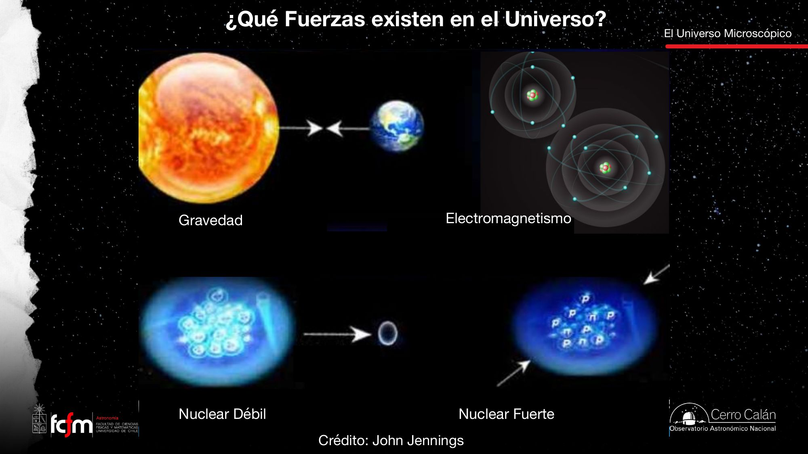
| Fuerza | Sobre qué actúa | Mediador | Dónde manda |
|---|---|---|---|
| Nuclear fuerte | Quarks / nucleones | Gluones | Dentro del núcleo; le "da dos cachetadas" a la repulsión eléctrica y mantiene el núcleo armado |
| Nuclear débil | Partículas del núcleo | Bosones W, Z (masivos) | Núcleo; hoy unificada con el EM como fuerza electrodébil |
| Electromagnetismo | Partículas con carga | Fotón (sin masa) | Del átomo a la vida diaria: química, biología, materiales |
| Gravedad | Partículas con masa | Gravitón (no detectado) | Escalas astronómicas: planetas, estrellas, galaxias |
Detalle importante para lo que viene: los fotones no tienen masa (cualquier partícula que viaje a la velocidad de la luz no puede tenerla, dice la relatividad). Que los neutrinos sí tienen algo de masa es un descubrimiento relativamente reciente. Y de la gravedad ya detectamos su expresión ondulatoria — las ondas gravitacionales, predichas por Einstein y detectadas justo 100 años después de publicada la relatividad general (tema del módulo 3) — pero no su partícula, el gravitón.
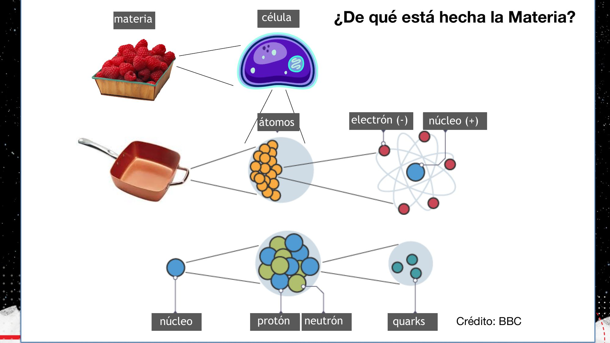
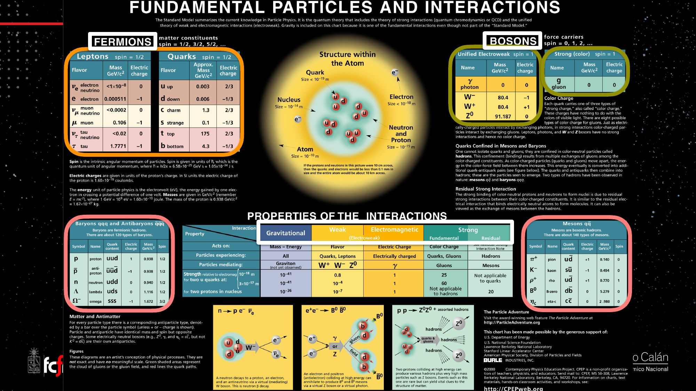
La "visión particulista" de las fuerzas — dos cargas que intercambian fotones para "saber" que la otra está ahí — es literalmente un modelo de paso de mensajes: las interacciones no son acción a distancia instantánea sino intercambio de portadores con velocidad finita. La tabla de interacciones del póster es una matriz de compatibilidad: qué partícula "escucha" a qué fuerza. La materia oscura, veremos, es la que casi no escucha ningún canal.
Pesar con el movimiento: de Kepler a Zwicky
Órbitas, equilibrio y la primera alarma: el cúmulo de Coma se mueve demasiado rápido.
Movimiento versus colapso
¿Por qué la Tierra no cae al Sol si la gravedad la atrae? Porque está en movimiento: está en órbita. Con poca velocidad, caería en espiral; con demasiada, se iría para siempre (como muchos cometas que pasan una vez y chao). Mantenerse estable exige la velocidad justa que contrarreste la atracción del sistema — el mismo balance "movimiento versus colapso" de todo el módulo.
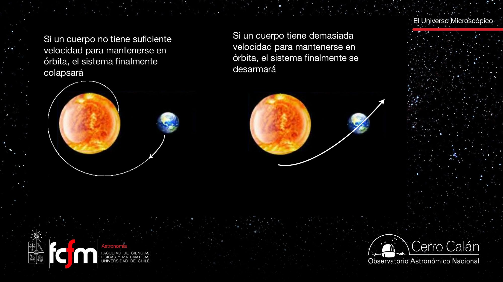
La consecuencia es de oro puro: si sabemos cómo se mueve un cuerpo (distancia y rapidez), sabemos cuánta masa lo atrae. Así "pesamos" el Sol con la órbita de la Tierra. En una circular:
Sistemas keplerianos
Un sistema kepleriano es uno donde casi toda la masa está en el cuerpo central — el sistema solar es el caso extremo: ~99,8% de la masa está en el Sol. Entonces es constante y la velocidad cae como : Mercurio corre a ~47 km/s ("pasado del límite urbano si fueran km/h", bromea la clase), la Tierra a ~30, y los planetas gigantes andan lentísimo.
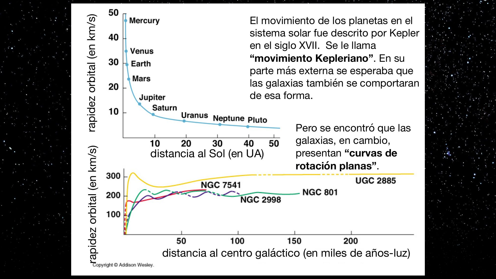
1937: Fritz Zwicky y el cúmulo de Coma
Recién sabíamos que existían las galaxias y que se "apatotan" en cúmulos. Zwicky estudió el cúmulo de Coma con una contabilidad de dos columnas: (1) sumó la luz de las galaxias para estimar cuántas estrellas (cuánta masa) había; (2) midió con el efecto Doppler a qué velocidad se movían las galaxias. Conclusión: van demasiado rápido — la autogravedad de la masa visible no basta para retenerlas. "Esa cosa tiene que estar desarmándose."
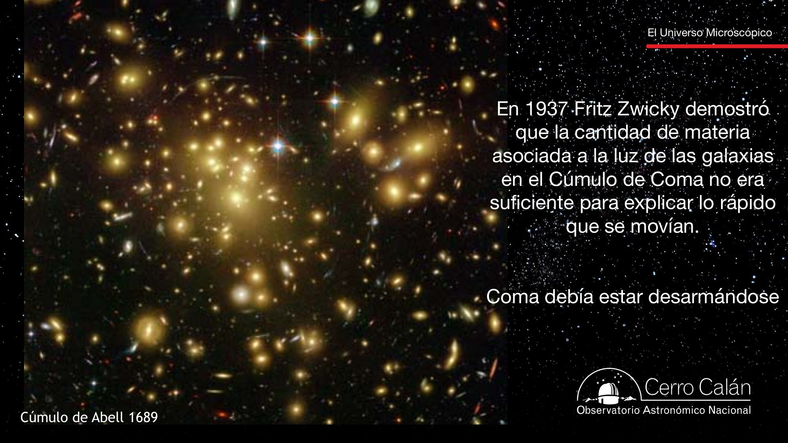
Zwicky hizo validación cruzada de dos estimadores independientes de la misma cantidad: masa fotométrica (sumar luz) vs masa dinámica (medir velocidades). Cuando dos sensores discrepan por un factor grande y sostenido, o un sensor está mal calibrado… o el modelo del sistema está incompleto. Tardamos 40 años en tomarnos en serio la segunda opción.
Vera Rubin y las curvas de rotación planas
Los años 70: las galaxias individuales tampoco se mueven como su luz predice.
En los años 70, Vera Rubin — pionera en más de un sentido: le negaron postgrados "por ser mujer" antes de que al fin la admitieran en un doctorado, y hoy el Observatorio Rubin en el norte de Chile lleva su nombre — estudió cómo rotan las galaxias individuales. Su hallazgo: las partes externas giran demasiado rápido.
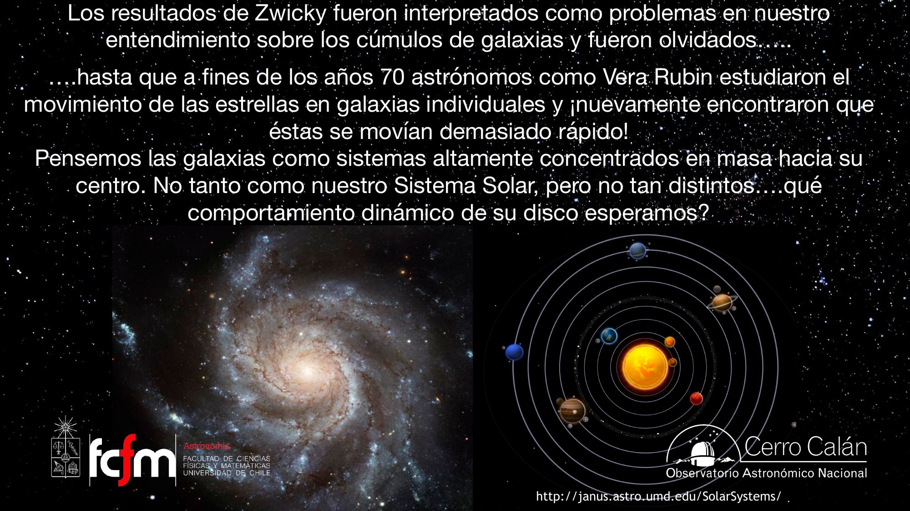
La lógica de la expectativa: lejos del centro, casi toda la masa (luminosa) ya quedó adentro, así que es casi constante y la velocidad debería decaer cuasi-keplerianamente. La subida inicial de la curva sí se entiende: al salir del bulbo denso uno va "metiendo" mucha masa al interior. Pero lo que se observa es que la curva no baja:
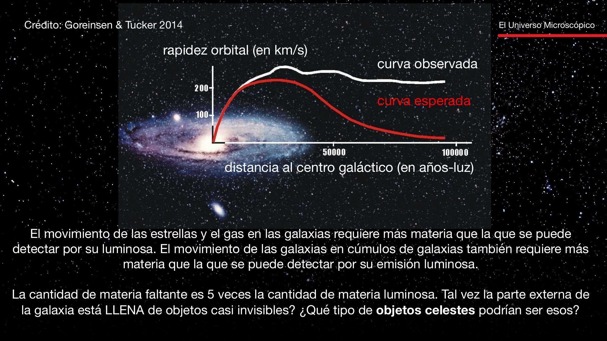
Por cada kilo de estrellas — más básico aún: por cada kilo de quarks y electrones — se necesitan ~5 kilos de otra cosa que no se ve. En la parte interna (donde vive el Sol) la discrepancia es tolerable; en las afueras ya no se puede explicar de ninguna manera. Y la materia oscura no solo explica movimientos: es ingrediente principal de la evolución del universo como un todo — sin ella no se reproduce cómo evolucionó el cosmos.
Una curva de rotación plana implica : la masa encerrada sigue creciendo linealmente con el radio justo donde la luz dice que ya no hay nada. Es como medir la respuesta en frecuencia de un circuito y descubrir que hay una componente que el esquemático no muestra: el residuo del ajuste no es ruido, es un elemento faltante del modelo — un halo extendido de materia que no emite.
La caza de los MACHOs: microlentes gravitacionales
Primera hipótesis: cuerpos astrofísicos apagados. Cómo se buscaron y por qué se descartaron.
¿Qué puede ser la materia faltante? Estrella no: brillaría. Tienen que ser objetos que casi no emitan: planetas, agujeros negros o enanas marrones — "estrellas fallidas" que nacen como estrellas pero sin masa suficiente para encender reacciones nucleares. Habría que vivir dentro de un halo repleto de ellos: se los bautizó MACHOs (MAssive Compact Halo Objects), porque deben habitar el halo externo de la galaxia para explicar cómo se mueve la periferia.
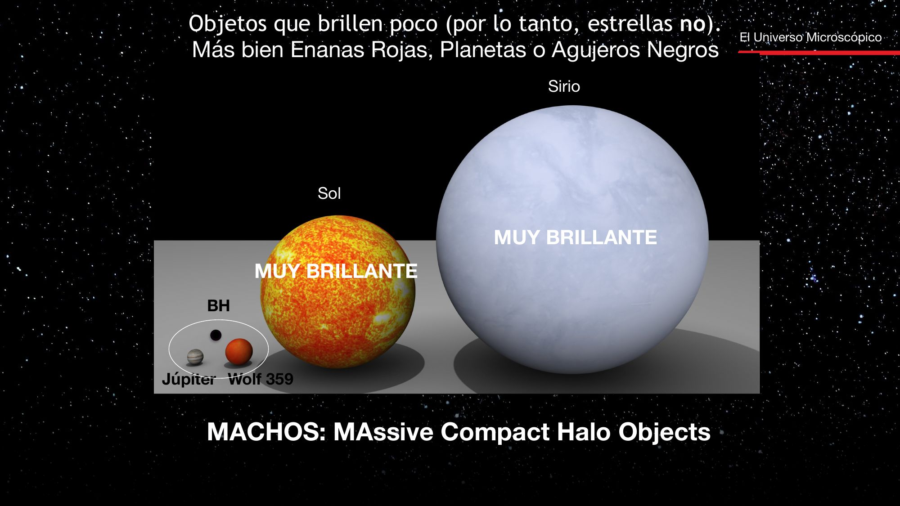
El truco: esperar eventos de microlente
En los 80 no había telescopios capaces de ver estos objetos directamente. La detección tenía que ser indirecta, y la clave la da la relatividad general (más en el módulo 3): toda masa curva el espacio, y la luz sigue esa curvatura (no porque tenga masa — no la tiene — sino porque el espacio mismo está curvado). Si un MACHO se cruza casi exactamente entre nosotros y una estrella de fondo, rayos que no nos habrían llegado se curvan y arriban: la estrella se ve transitoriamente más brillante. Eso es un evento de microlente.
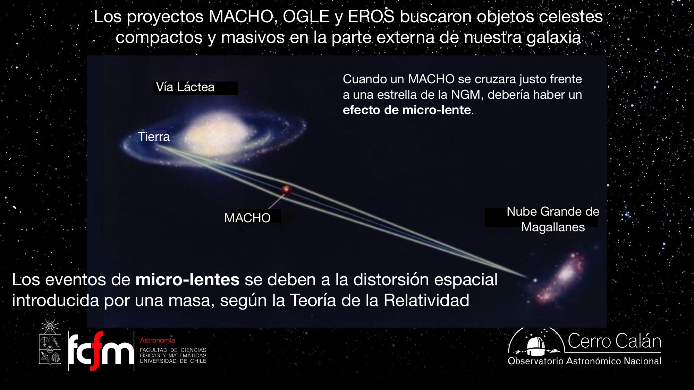
El evento tiene forma característica: el espacio "plano" → el MACHO acarrea su deformación → el brillo sube, alcanza un máximo y vuelve a la normalidad cuando la lente sigue de largo. Con la velocidad y las distancias conocidas, hasta la duración del evento era predecible.
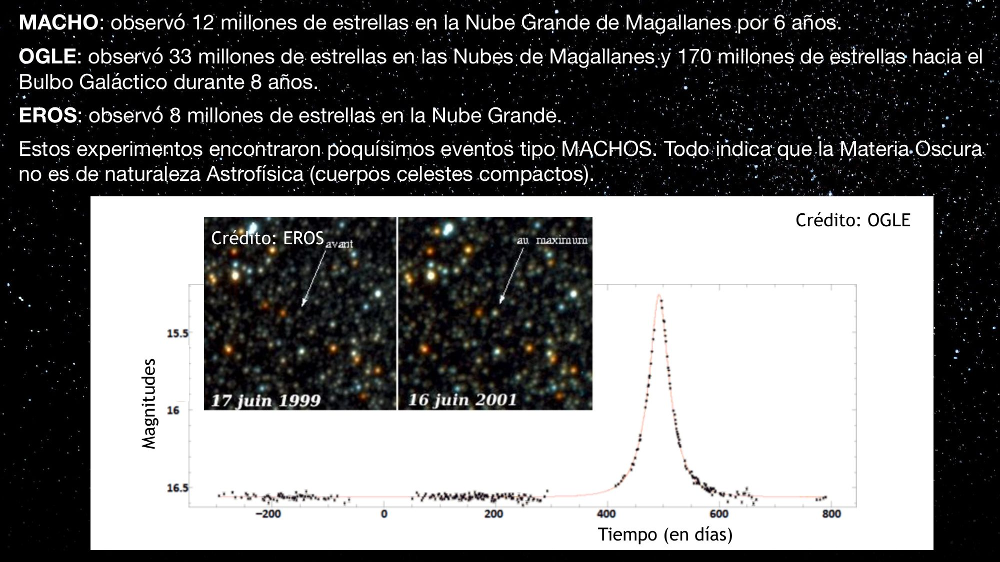
La galaxia no está embebida en un mar de cuerpos astrofísicos compactos y débiles. La materia oscura no es de naturaleza astrofísica. La pelota (la papa caliente) pasó a los físicos de partículas.
Las campañas MACHO/OGLE/EROS son detección de anomalías en series de tiempo a escala masiva: fotometría de decenas de millones de estrellas durante años, buscando un pulso de forma conocida (plantilla de amplificación) sobre fondo ruidoso. Diseño experimental con tasa de eventos esperada calculada a priori — y el veredicto vino de comparar tasa observada vs esperada, no de un evento individual.
WIMPs y axiones: la materia oscura hoy
Si no es un cuerpo celeste, quizá es una partícula. Requisitos, candidatos y búsquedas.
¿Qué exige el cargo? Una partícula fundamental aún no detectada que sea abundante, masiva, y que no interactúe ni electromagnéticamente ni por fuerza nuclear fuerte. Lo primero porque no la vemos emitir ni absorber radiación bajo ninguna circunstancia; lo segundo porque, si sintiera la fuerza fuerte, la síntesis del hidrógeno y el helio tras el Big Bang habría sido totalmente distinta.
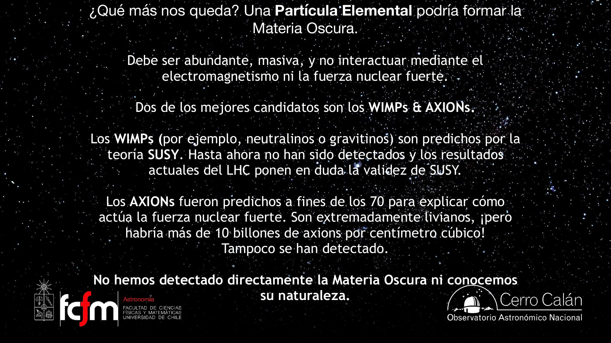
WIMPs y supersimetría
Para sorpresa de la profesora, no fueron partículas "sacadas del sombrero": ya estaban propuestas por otras razones. La supersimetría (SUSY) postula que en el universo temprano cada partícula conocida tenía una superpartícula con los roles invertidos: los fermiones tenían compañeros bosones (squarks, selectrón, smuón, stau) y los bosones compañeros fermiones masivos (gluino, fotino, wino, zino, higgsino). Casi todas habrían muerto tempranamente por inestables — excepto las más livianas, como el neutralino, con las características justas para ser materia oscura. El problema: el LHC (el gran acelerador en la frontera franco-suiza) lleva años operando sin encontrar nada que sostenga a SUSY.
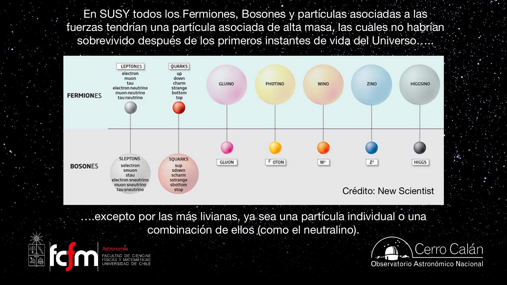
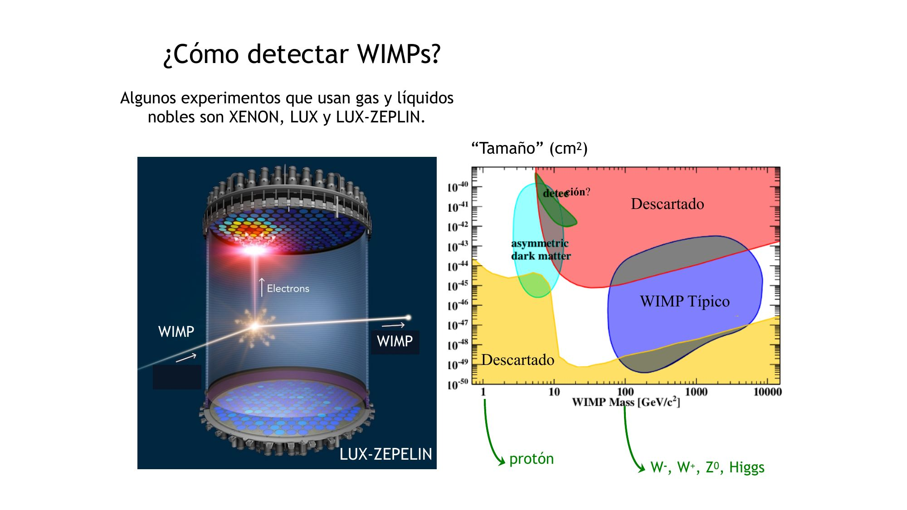
Axiones
Predichos a fines de los 70 en relación con la fuerza nuclear fuerte. Serían livianísimos pero absurdamente numerosos (>10 billones por cm³ según las ecuaciones). Se buscan mediante el efecto Primakov: en un campo magnético muy intenso, un axión debería transformarse en fotón y viceversa. Experimentos tipo "luz a través de la pared" (láser + imán superconductor + detector, como OSQAR y en DESY) los persiguen; el Sol debería emanar cantidades gigantescas de axiones desde su núcleo, y una posible detección con el satélite XMM-Newton (2014) fue desestimada en 2015.
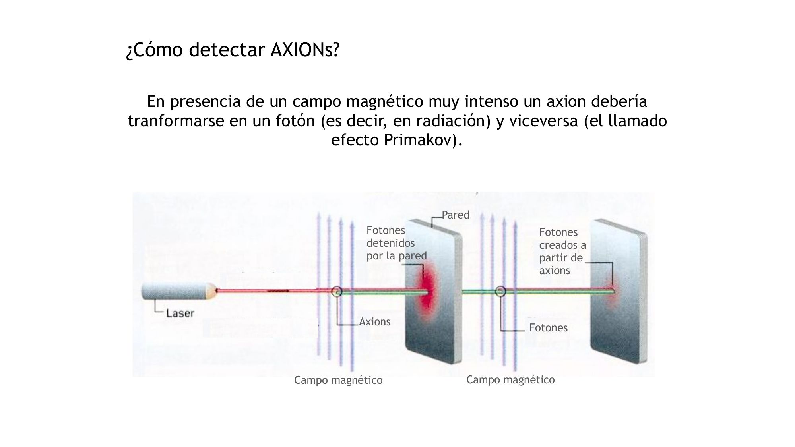
Llevamos ~40 años sin saber de qué está hecha la mayor parte de la materia del universo — 5 partes de materia oscura por cada 1 de materia conocida. Vera Rubin murió sin saberlo. "¿Para qué sirve la astronomía? Para saber de qué está hecho el universo… porque parece que no tenemos idea." Y la profesora promete más humildad cósmica para el módulo 3: la energía oscura.
Para reforzar por tu cuenta: OpenStax Astronomy 2e, §25.4 "The Mass of the Galaxy" (materia oscura en la Vía Láctea, introductorio) y §28.4 "The Challenge of Dark Matter" (Zwicky, curvas de rotación, MACHOs y candidatos de partícula, introductorio-intermedio). La animación de curvas de rotación mostrada en clase está en YouTube (enlace citado en la diapositiva 14).
Explorar conceptos
Tres widgets para jugar con las ideas centrales de la clase.
Conceptos clave
Tabla de repaso rápido.
| Concepto | Qué es / valor | Por qué importa |
|---|---|---|
| Secuencia principal | ~95% de la vida; la estrella no se mueve del punto donde nació | Base para leer colores y edades de galaxias |
| Rango de la SP | 1 orden de magnitud en T (3.000–30.000 K), ~11 en L | Las masivas opacan a todas las demás |
| Vidas estelares | Masivas: pocos Ma; Sol: ~10 Ga; enanas: > edad del universo | El color azul es un sensor de FE reciente |
| "Pelar el plátano" | Las estrellas mueren de arriba hacia abajo de la SP | La razón M/L crece con la edad de la población |
| Región HII | Burbuja de H ionizado por estrellas masivas (UV); transiente | Delinea los brazos espirales |
| Disco vs esferoide | Rotación ordenada ("caballito de feria") vs dispersión aleatoria | Ambos aportan la energía cinética que evita el colapso |
| Onda de densidad | Brazo espiral = región de alta densidad que el material atraviesa | Mata la hipótesis del enrollamiento; gatilla FE por compresión |
| Galaxias cD | Las más grandes; crecen en centros de cúmulos tragándose vecinas | Extremo alto fuera de la secuencia de Hubble |
| AGN | Agujero negro supermasivo tragando material; puede tener jet relativista | El núcleo encandila y opaca a la galaxia entera |
| Fusiones | Elípticas ≈ fusión de espirales masivas; bulbos = fusiones previas | La evolución va "al revés" del diapasón de Hubble |
| Densidad crítica | Umbral de desacople de la expansión | Grupo Local ligado ⇒ chocamos con Andrómeda |
| Cuatro fuerzas | Fuerte, débil (núcleo), EM (cargas), gravedad (masa) | La materia oscura no siente ni EM ni la fuerte |
| Quarks y electrones | Los ladrillos elementales de la materia conocida | Bariones = 3 quarks; mesones = 2 |
| Sistema kepleriano | Casi toda la masa central (Sol: 99,8%); v ∝ r−1/2 | La expectativa que las galaxias violan |
| Masa dinámica | La "balanza" de Zwicky y Rubin | |
| Zwicky (1937) | Cúmulo de Coma: velocidades demasiado altas para su luz | Primera evidencia de materia faltante (olvidada 40 años) |
| Curva de rotación plana | v(r) ≈ constante (~200 km/s) en las afueras | M(<r) ∝ r donde casi no hay luz ⇒ halo oscuro |
| Factor 5 | Materia oscura ≈ 5 × materia luminosa | La mayor parte de la materia no es como nosotros |
| MACHOs | Massive Compact Halo Objects (enanas rojas/marrones, planetas, BH) | Descartados: poquísimos eventos de microlente |
| Microlente | Amplificación transitoria del brillo por curvatura del espacio | Método de MACHO (12M ★, 6a), OGLE (33M+170M, 8a), EROS (8M) |
| WIMPs | Neutralinos/gravitinos de SUSY; buscados en XENON/LUX/LZ y LHC | Candidato masivo; SUSY en duda por el LHC |
| Axiones | Livianísimos, >10 billones/cm³; efecto Primakov (axión↔fotón) | Candidato liviano; OSQAR, DESY, XMM-Newton (2014, desestimada) |
Exámenes de práctica
10 exámenes de 5 preguntas (3 de alternativas autocorregibles + 2 de respuesta escrita).
- Examen 01Diagrama HR y vidas estelares
- Examen 02Colores y poblaciones estelares
- Examen 03Discos, esferoides y ondas de densidad
- Examen 04Formación estelar y multibanda
- Examen 05Más allá de la secuencia de Hubble
- Examen 06Fusiones y evolución
- Examen 07Fuerzas y modelo estándar
- Examen 08De Kepler a Zwicky
- Examen 09Curvas de rotación y MACHOs
- Examen 10WIMPs, axiones e integrador